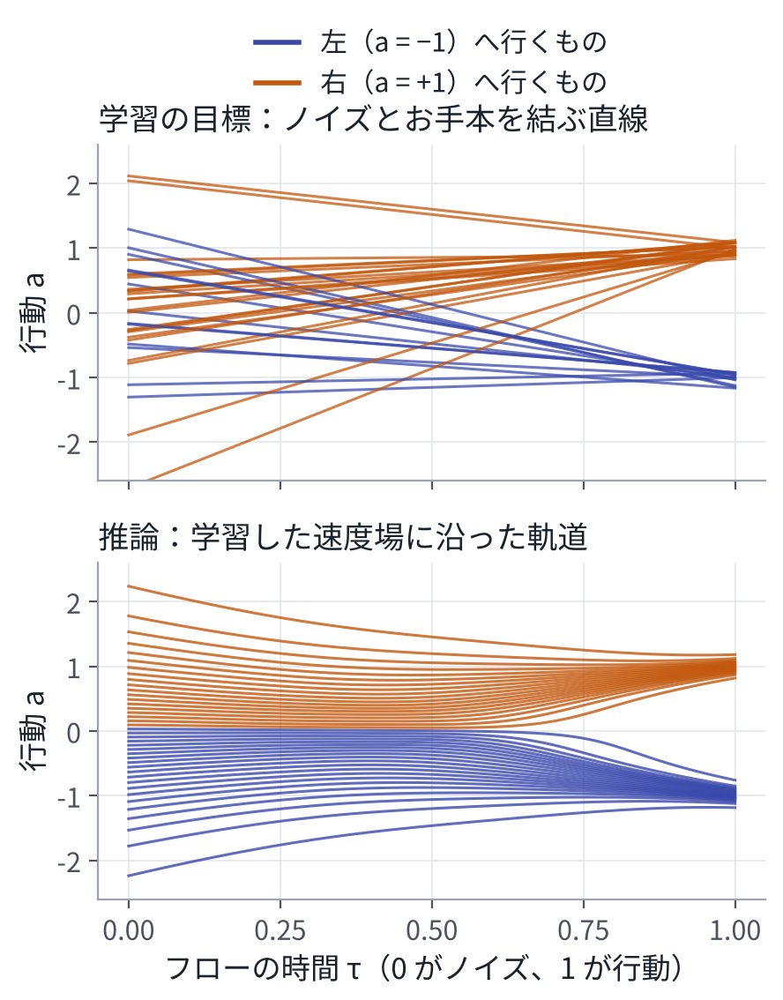
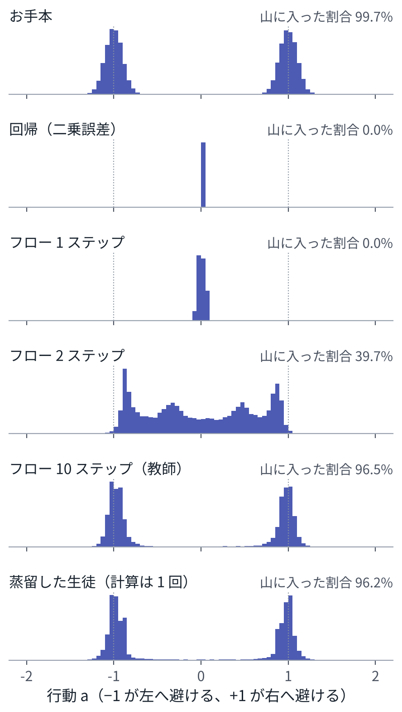

目次
0結論
- VLA は、条件付きの確率分布を表すニューラルネットである。観測と指示を入れると、行動の分布が決まる。使われている数理は、この分布を「どう表し、どうお手本に合わせ、どう取り出すか」の 3 つに整理できる。
- 学習は、モデルの分布をお手本の分布に合わせることである。基本の形は最尤推定で、負の対数尤度を勾配法で小さくする。これは、2 つの分布の KL ダイバージェンスを小さくすることと同じである。拡散やフローでは、同じねらいを二乗誤差の回帰で実現する。
- 推論は、合わせた分布から行動を 1 つ取り出す計算である。取り出し方は 2 系統ある。トークンを 1 つずつ取り出す自己回帰と、ノイズから始めて微分方程式を解くフロー（拡散）である。どちらも、ネットを何回も計算する。
- 蒸留は、学習済みのモデル（教師）の出力を目標にして、別のモデル（生徒）を学習させることである。ロボットでは、3 つの違う意味で使われる。モデルを小さくする。推論のステップを減らす。方策をまとめる（シミュレータの中の情報を使う教師から、実機の観測だけで動く生徒へ）。
- 必要な数学は、線形代数、確率、最適化、常微分方程式の 4 つである。MPC と MPPI を数式で追ったことがあれば、最適化と確率の半分はすでに持っている。
- 順路は 9 段階あり、全部で 70 時間ほどが目安である。3 つの意味だけを先に知りたいなら、この資料の 2 章と 3 章を読み、段階 5 と段階 8 へ進めばよい。
1中心にある 1 つの式
VLA（Vision-Language-Action モデル）がやっていることは、次の 1 行で書ける。
\[ A_t \sim \pi_\theta(\,\cdot \mid o_t,\ \ell\,) \]「観測 \(o_t\) と指示 \(\ell\) を条件にした分布 \(\pi_\theta\) から、行動のまとまり \(A_t\) を 1 つ取り出す」と読む。
| 記号 | 意味 | 例 |
|---|---|---|
| \(o_t\) | 時刻 \(t\) の観測。カメラ画像と、関節の角度など | 画像 3 枚と、関節の角度 |
| \(\ell\) | 言葉の指示 | 「赤いブロックを取って」 |
| \(a_t\) | 時刻 \(t\) の行動。\(D\) 次元の実数のベクトル | 関節の目標角度、手先の目標位置 |
| \(A_t\) | 行動のまとまり（action chunk）。先の \(H\) ステップ分 \((a_t,\dots,a_{t+H-1})\) | π0 の実装では \(H = 50\)[43] |
| \(\theta\) | ネットの重み | 数億個から数十億個 |
| \(\pi_\theta\) | 方策（policy）。重み \(\theta\) で決まる条件付きの確率分布 | — |
以下では、条件の \((o_t, \ell)\) をまとめて \(c\) と書き、時刻の添字を省いて \(\pi_\theta(A \mid c)\) と書く。
なぜ「1 つの答え」ではなく「分布」なのか
同じ観測と指示でも、正しい行動は 1 つとは限らない。障害物は右からでも左からでも避けられる。人のお手本には、両方が混ざっている。「1 つの答え」を出すように学習すると、2 つの正解の平均、つまり障害物の正面へ進む答えになることがある。これを避けるには、答えの分布をまるごと表して、そこから 1 つを取り出す必要がある。3 章で、実際にそうなることを確かめる。
3 つの動詞
この 1 行の式に対して、やることは 3 つある。
| 動詞 | 数式の上での意味 | 計算としてやること | いつ |
|---|---|---|---|
| 学習 | \(\displaystyle \min_\theta\ \mathbb{E}_{\mathcal D}\big[-\log \pi_\theta(A \mid c)\big]\) | 損失の勾配を逆伝播で求め、重み \(\theta\) を少しずつ動かす | 事前。GPU で数時間から数週間 |
| 推論 | \(A \sim \pi_\theta(\,\cdot \mid c)\) | \(\theta\) は固定。ネットを 1 回から数十回、前向きに計算する | 実行時。制御の周期に間に合わせる |
| 蒸留 | \(\displaystyle \min_\phi\ \mathbb{E}_{x\sim\rho}\big[D\big(f_{\text{教}}(x),\, f_{\text{生}}(x;\phi)\big)\big]\) | 教師の出力を目標にして、生徒の重み \(\phi\) を学習する | 学習のあと、実機に載せる前 |
\(\mathcal D\) はお手本のデータ、\(f_{\text{教}}\) は教師、\(f_{\text{生}}\) は生徒、\(D\) はずれを測る量、\(\rho\) はどの入力の上で合わせるかを決める分布。くわしくは 2 章。
2学習、推論、蒸留の数理
2.1 学習は、分布をお手本に合わせること
お手本のデータ \(\mathcal D\) は、人がロボットを遠隔操作して集めた、条件と行動の組 \((c, A)\) の集まりである。学習の基本の形は最尤推定で、お手本の行動に、できるだけ高い確率を割り当てる重みを探す。
\[ \theta^\star = \arg\max_\theta \sum_{(c,A)\in\mathcal D} \log \pi_\theta(A \mid c) \]符号を変えて平均を取ったものが、損失である。
\[ L(\theta) = \mathbb{E}_{(c,A)\sim\mathcal D}\big[-\log \pi_\theta(A \mid c)\big] \]お手本の行動の分布を \(p\) と書くと、この損失は次のように分けられる。
\[ \mathbb{E}_{p}\big[-\log \pi_\theta\big] = H(p) + \mathrm{KL}\big(p \,\|\, \pi_\theta\big) \]\(H(p)\) はお手本のエントロピーで、\(\theta\) によらない。だから、損失を小さくすることは、お手本の分布とモデルの分布の KL ダイバージェンスを小さくすることと同じである。「学習は、分布を合わせること」と言えるのは、このためである。
分布 \(\pi_\theta\) をどういう形で表すかによって、損失の見た目が変わる。
| 分布の表し方 | 損失 | 使っている例 |
|---|---|---|
| 正規分布。平均をネットが出す | 二乗誤差 \(\|A - f_\theta(c)\|^2\) | 単純な回帰 |
| ラプラス分布。中心をネットが出す | 絶対値の誤差 \(\|A - f_\theta(c)\|_1\) | ACT[9]、OpenVLA-OFT[20] |
| トークンごとの確率の積 | 交差エントロピー \(-\sum_i \log p_\theta(u_i \mid u_{<i}, c)\) | RT-2[16]、OpenVLA[17]、π0-FAST[19] |
| ノイズを運ぶ流れ（フロー） | 速度の二乗誤差 \(\|v_\theta(A^\tau,\tau,c) - (A-\varepsilon)\|^2\) | π0[18]、SmolVLA[25]、GR00T N1[23] |
| ノイズを少しずつ除く過程（拡散） | ノイズの二乗誤差 \(\|\varepsilon_\theta(A^k,k,c) - \varepsilon\|^2\) | Diffusion Policy[15] |
上の 3 行は、負の対数尤度そのものである。正規分布を仮定すると二乗誤差に、ラプラス分布を仮定すると絶対値の誤差になる。拡散の損失は、負の対数尤度の上界を簡単にしたものである[10]。フローの損失は尤度を直接は使わないが、お手本の分布を作り出す速度場への回帰になっていて、ねらいは同じである[12]。
損失を小さくするには、勾配法を使う。
\[ \theta \leftarrow \theta - \eta\, \nabla_\theta L(\theta) \]勾配 \(\nabla_\theta L\) は、連鎖律を出力側から入力側へたどる逆伝播で求める。データは全部を一度には使わず、少しずつ取り出して（ミニバッチ）、そのたびに重みを動かす。\(\eta\) は学習率である。
2.2 推論は、分布から 1 つ取り出すこと
推論では、重み \(\theta\) を固定する。逆伝播はしない。計算は、入力から出力へ向かう前向きの計算だけである。取り出し方は、分布の表し方で決まる。
自己回帰。行動をトークンの列 \(u_1,\dots,u_M\) で表し、分布を条件付き確率の積に分ける。
\[ p_\theta(u_{1:M} \mid c) = \prod_{i=1}^{M} p_\theta(u_i \mid u_{<i},\, c) \]推論では、\(u_1\) を取り出し、それを入力に足して \(u_2\) を取り出し、と前から順に進める。ネットの計算は \(M\) 回になる。ロボットでは、確率が最大のトークンを選ぶ設定が多い（LeRobot の π0-FAST は、既定で温度 0）[44]。
フロー。正規分布から取り出したノイズ \(A^0 = \varepsilon\) から始めて、学習した速度場 \(v_\theta\) に沿って運ぶ。つまり、次の常微分方程式を \(\tau = 0\) から \(\tau = 1\) まで解く。
\[ \frac{dA^\tau}{d\tau} = v_\theta(A^\tau, \tau, c), \qquad A^0 = \varepsilon \sim \mathcal N(0, I) \]いちばん簡単な解き方はオイラー法で、\(\delta = 1/N\) として次の更新を \(N\) 回くり返す。
\[ A^{\tau+\delta} = A^\tau + \delta\, v_\theta(A^\tau, \tau, c) \]π0 の実装は \(N = 10\) である。画像と言葉の部分は最初に 1 回だけ計算し、その結果を使い回して、行動の部分だけを 10 回計算する[43]。
回帰。ネットを 1 回計算して、出てきた値をそのまま行動として使う。分布から取り出すというより、分布の中心を 1 つ出していることになる。
どの方法でも、出てくるのは \(H\) ステップ分の行動のまとまりである。先頭の何ステップかを実行して、また出し直す。先まで計画して先頭だけ使うという形は、MPC と同じである（6 章）。
2.3 蒸留は、教師のふるまいを生徒に写すこと
蒸留も学習の一種で、損失を勾配法で小さくするところは同じである。違うのは目標で、人のお手本ではなく、学習済みのモデル（教師）の出力を目標にする。一般の形は次のとおりである。
\[ \min_\phi\ \mathbb{E}_{x\sim\rho}\Big[ D\big(f_{\text{教}}(x),\ f_{\text{生}}(x;\phi)\big) \Big] \]決めることは 3 つある。教師の何を目標にするか（\(f_{\text{教}}\)）。どの入力の上で合わせるか（\(\rho\)）。ずれをどう測るか（\(D\)）。教師は、入力を与えればいくらでも答えを出せる。お手本と違って、目標が大量に、ばらつきなく手に入る。これが蒸留の強みである。
ロボットの分野では、「蒸留」が 3 つの違う意味で使われる。
| 何をするか | 教師 | 生徒 | 合わせるもの | 得るもの |
|---|---|---|---|---|
| 小さくする（知識蒸留） | 大きいモデル | 小さいモデル | 出力の確率分布、途中の特徴 | メモリと計算時間 |
| ステップを減らす | 多くのステップで解くフローや拡散 | 1 回から数回で出すモデル | ノイズから行動への写像、または行動の分布 | 計算の回数（10 回が 1 回に） |
| 方策をまとめる（方策蒸留） | シミュレータの中の情報を使う方策、強化学習の方策、複数の専門の方策 | 実機の観測だけで動く 1 つの方策 | 行動 | 実機で動くこと、1 つにまとまること |
小さくする。分類の例で書く。ネットの出力（ロジット）を \(z\) とし、温度 \(T\) の softmax を \(p^{(T)}_i = e^{z_i/T} / \sum_j e^{z_j/T}\) と書く。生徒の損失は、正解 \(y\) に対する交差エントロピーと、教師の分布に対する KL の和である[27]。
\[ \begin{aligned} L(\phi) ={}& (1-\alpha)\,\mathrm{CE}\big(y,\ p_{\text{生}}\big) \\ &+ \alpha\, T^2\, \mathrm{KL}\big(p^{(T)}_{\text{教}} \,\big\|\, p^{(T)}_{\text{生}}\big) \end{aligned} \]教師の出力は、正解のクラスだけでなく、「どのクラスとどのクラスが似ているか」も含んでいる。温度を上げると、正解でないクラスの確率の差が見えるようになり、その情報が生徒に伝わる。係数 \(T^2\) は、温度を変えても勾配の大きさがそろうようにするためのものである。
ステップを減らす。フローの推論は、ノイズ \(\varepsilon\) を行動 \(A\) に写す、決まった写像と見なせる。教師の速度場を \(N\) ステップで積分した結果を \(\Phi_N(\varepsilon, c)\) と書く。いちばん素直な蒸留は、これを 1 回の計算で出す生徒 \(g_\phi\) を、回帰で学習することである。
\[ \min_\phi\ \mathbb{E}_{\varepsilon,\,c}\ \big\| g_\phi(\varepsilon, c) - \Phi_N(\varepsilon, c) \big\|^2 \]実際に使われる方法は、これを工夫したものである。段階的蒸留は、教師の 2 ステップ分を生徒の 1 ステップに合わせ、ステップ数を半分にすることをくり返す[28]。一貫性モデルは、「同じ軌道の上の点は、どこから始めても同じ終点に着く」という条件を生徒に課す[29]。ほかに、写像ではなく、生徒が出す行動の分布を教師の分布に合わせる方法もある[31]。
方策をまとめる。教師 \(\pi_{\text{教}}(a \mid s)\) は、シミュレータの中でしか分からない真の状態 \(s\)（物体の正確な位置や、摩擦など）を見て動く。生徒 \(\pi_{\text{生}}(a \mid o)\) は、実機で手に入る観測 \(o\) だけを見る。
\[ \min_\phi\ \mathbb{E}_{s\sim d_{\text{生}}}\Big[ D\big(\pi_{\text{教}}(\cdot \mid s),\ \pi_{\text{生}}(\cdot \mid o(s);\phi)\big) \Big] \]\(d_{\text{生}}\) は、生徒が自分で動いたときに訪れる状態の分布である。ここが要点になる。教師が訪れた状態の上だけで合わせると、生徒は、少し外れたときの戻り方を教わらない。生徒に動かせて、訪れた状態に教師の答えを付け直す。この手順を DAgger という[8]。
蒸留でないもの。量子化（重みを少ないビットで表す）、枝刈り、LoRA は、同じモデルを軽くしたり、一部だけ学習したりする方法である。教師と生徒という関係はない。蒸留と組み合わせて使うことはある。
蒸留には限界もある。生徒は、教師の誤りもそのまま写す。また、どの入力の上で合わせるか（\(\rho\)）を誤ると、合わせたはずの生徒が、実際に使う場面で教師とずれる。
2.4 2 つの系統を並べる
| 自己回帰型 | フロー型 | |
|---|---|---|
| 行動の表し方 | 離散のトークンの列 | 連続値のまま |
| 分布の表し方 | トークンの条件付き確率の積 | ノイズを運ぶ速度場 |
| 学習の損失 | 交差エントロピー | 速度の二乗誤差 |
| 学習の 1 回の計算 | 正解の列を入れて、全部の位置を一度に | 時間 \(\tau\) を 1 つ選び、その点で 1 回 |
| 推論 | トークンを 1 つずつ。\(M\) 回 | 常微分方程式を \(N\) ステップ。\(N\) 回 |
| 蒸留の主なねらい | モデルを小さくする | ステップを減らす |
| 例 | RT-2、OpenVLA、π0-FAST | π0、SmolVLA、GR00T N1 |
2 つを組み合わせるモデルもある。π0.5 は、学習では離散のトークンも使い、推論ではフローで行動を出す[22]。段階 6 で扱う。
31 次元で確かめる
式だけでは実感しにくいので、行動が 1 次元の小さな問題で、学習、推論、蒸留を実際に動かす。場面は次のとおりである。
- ロボットの正面に障害物がある。
- お手本は、左へ避けるもの（行動 \(a = -1\)）と、右へ避けるもの（\(a = +1\)）が半々である。
- 正面へ進む行動（\(a = 0\)）は、お手本に 1 つもない。
コードは、このリポジトリの vla_math/ にある。numpy だけで書いてあり、GPU は要らない。ニューラルネットの逆伝播と Adam も、ライブラリを使わずに書いてある。
python3 vla_math/ex01_learn_infer_distill.py以下の数値と図は、これを実行して得たものである。
3.1 回帰は、山の平均を出す
二乗誤差で「1 つの答え \(c\)」を学習すると、答えはお手本の平均になる。
\[ \arg\min_c\ \mathbb{E}\big[(a - c)^2\big] = \mathbb{E}[a] \]この問題では \(\mathbb{E}[a] = 0\) で、実験でも \(c = 0.002\) になった。障害物の正面へ進む行動であり、お手本のどれとも違う。入力を増やしてネットを大きくしても、同じ観測に対して正解が 2 つある限り、同じことが起きる。分布を表す必要がある、というのはこのことである。
3.2 学習：直線の速度を目標にすると、交わらない流れになる
フローマッチングの学習は、次の 3 行である。
- お手本 \(a\)、ノイズ \(\varepsilon \sim \mathcal N(0,1)\)、時間 \(\tau \in [0,1]\) を取り出す。
- ノイズとお手本を直線で結び、途中の点 \(a^\tau = (1-\tau)\,\varepsilon + \tau\, a\) を作る。
- その点での直線の速度 \(a - \varepsilon\) を目標にして、ネット \(v_\theta(a^\tau, \tau)\) を二乗誤差で学習する。
微分方程式は、学習では一度も解かない。

目標の直線は交わるのに、学習された流れは交わらない。理由は、二乗誤差の回帰の最適解が、条件付きの期待値になるからである。
\[ v^\star(x, \tau) = \mathbb{E}\big[\, a - \varepsilon \ \big|\ a^\tau = x \,\big] \]点 \(x\) を通る直線は何本もある。その速度の平均が、学習される速度である。そして、この速度場でノイズの分布を運ぶと、\(\tau = 1\) でちょうどお手本の分布になる。これがフローマッチングの中心になる定理である[12]。
実験では、この問題の \(v^\star\) を式で書けるので、学習したネットと比べた。ずれは 0.099（二乗平均の平方根。速度の大きさは 0.92）だった。損失は 1.38 から 1.18 へ下がって止まった。0 にはならない。同じ点を通る直線の速度がばらつくので、その分は残る。損失が下がりきらないのは、失敗ではない。
3.3 推論：ステップ数で何が変わるか
学習した速度場を、オイラー法で積分する。ステップ数 \(N\) を変えて、取り出した行動の分布を比べた。

| 方法 | 山に入った割合 | 計算 |
|---|---|---|
| お手本 | 99.7% | — |
| 回帰（二乗誤差） | 0.0% | 1 回 |
| フロー 1 ステップ | 0.0% | 1 回 |
| フロー 2 ステップ | 39.7% | 2 回 |
| フロー 4 ステップ | 86.7% | 4 回 |
| フロー 10 ステップ | 96.5% | 10 回 |
| フロー 100 ステップ | 98.8% | 100 回 |
| 蒸留した生徒 | 96.2% | 1 回 |
「計算」は、行動を 1 つ出すためにネットを計算する回数である。蒸留した生徒は 3.4 で作る。
1 ステップでは、回帰と同じく正面へ進んでしまう。これは式で説明できる。\(\tau = 0\) の点 \(a^0 = \varepsilon\) は、お手本と無関係に取り出したノイズである。だから、そこを通る直線の速度の平均は次のようになる。
\[ v^\star(\varepsilon, 0) = \mathbb{E}[a] - \varepsilon \]オイラー法の 1 ステップは \(\varepsilon + 1\cdot\big(\mathbb{E}[a] - \varepsilon\big) = \mathbb{E}[a]\) で、お手本の平均になる。ステップを重ねると、途中の点が「どちらの山に近いか」という情報を持つようになり、速度がそれぞれの山へ向く。計算を重ねることで、平均ではなく山そのものに着く。
3.4 蒸留：解いた結果を、1 回で出せるように写す
10 ステップの教師は、ノイズ \(\varepsilon\) を行動 \(a\) に写す。この写像を図にすると、0 を境にした段のような形になる。生徒は、ノイズを入れると行動を 1 回で出すネットで、教師の出力を目標にした二乗誤差で学習した。お手本のデータは使っていない。

生徒が山に入った割合は 96.2% で、教師の 96.5% とほぼ同じだった。ネットの計算は、10 回が 1 回になった。
教師を 1 ステップで使うと 0% なのに、同じ「計算 1 回」の生徒が 96.2% になるのはなぜか。教師のネットが覚えているのは速度場で、それは積分して初めて行動になる。生徒が覚えているのは、積分し終えた結果である。蒸留は、推論のたびにやっていた計算を、学習の段階に前倒ししたことになる。
この例の限界。行動が 1 次元で、条件もないので、教師の写像はとても単純である。実際のロボットでは、行動のまとまりは数百次元を超え（π0 の実装では 50 ステップ × 32 次元[43]）、写像は観測と指示にも依る。それでも蒸留が成り立つか、どこで崩れるかは、段階 8 の論文が扱っている。
4ロードマップ
必要な知識を、9 つの段階に分けた。段階 2 と 3 は、入力（画像と言葉）を扱う列である。段階 4 と 5 は、出力（行動）を扱う列である。2 つの列は、段階 6 で合流する。
| 段階 | 題 | 中心になるもの | 目安 |
|---|---|---|---|
| 0 | 前提の数学 | 行列、確率、勾配、常微分方程式 | 手持ちに応じて |
| 1 | 学習とは何か | 最尤推定、交差エントロピー、逆伝播 | 6 時間 |
| 2 | Transformer と自己回帰 | 注意機構、次のトークンの予測 | 10 時間 |
| 3 | 画像と言葉を 1 つの列に（VLM） | パッチ、対照学習、LoRA | 8 時間 |
| 4 | 模倣学習と、その弱点 | 誤差の積み重なり、行動のまとまり | 8 時間 |
| 5 | 拡散とフローマッチング | 速度の回帰、常微分方程式 | 12 時間 |
| 6 | VLA を組み立てる | 行動のトークン化、行動の専門家 | 10 時間 |
| 7 | 推論を実機の時間に合わせる | 遅れ、出し直す間隔、つなぎ目 | 6 時間 |
| 8 | 蒸留 | 教師と生徒、3 つの意味 | 10 時間 |
目安は、要点の式を追い、「手を動かす」を 1 つやる時間として置いた。根拠のある値ではない。挙げた論文を全部読むと、もっとかかる。
5各段階
段階ごとに、ねらい、中心の式、読むもの、手を動かすこと、目印を並べる。目印は、「これに答えられれば次へ進んでよい」という問いである。
0前提の数学目安 手持ちに応じて
ねらい
4 つの道具をそろえる。全部を先に固める必要はない。段階を進めながら、足りないところへ戻ればよい。
| 分野 | 何に使うか | 最低限の中身 |
|---|---|---|
| 線形代数 | 注意機構（内積と行列の積）、LoRA（低ランクの行列） | 行列の積、内積、転置、ランク |
| 確率 | 損失の意味、分布からの取り出し方 | 条件付き確率、期待値、正規分布、最尤推定、KL ダイバージェンス |
| 最適化 | 学習 | 勾配、連鎖律、勾配降下法 |
| 常微分方程式 | フローと拡散の推論 | 初期値問題、オイラー法 |
MPC と MPPI を学んでいれば、連鎖律とヤコビアンは非線形 MPC で、正規分布と期待値と重みつき平均は MPPI で使ったものと同じである。新しく要るのは、最尤推定と KL ダイバージェンスくらいである。
読むもの
- Prince『Understanding Deep Learning』の付録 B（数学）と付録 C（確率）[40]。必要な範囲が短くまとまっている。
1学習とは何か目安 6 時間
ねらい
「損失を決めて、勾配で下る」という手順が、確率の言葉で何をしているのかを押さえる。あとの段階に出てくる損失は、すべてここの変形である。
中心の式
出力が正規分布に従うと仮定すると、負の対数尤度は二乗誤差になる。
\[ \begin{aligned} &-\log \mathcal N\big(y;\ f_\theta(x),\ \sigma^2 I\big) \\ &\qquad = \frac{1}{2\sigma^2}\,\big\|y - f_\theta(x)\big\|^2 + \text{定数} \end{aligned} \]分類では、ネットの出力 \(z\) を softmax で確率 \(p_i = e^{z_i} / \sum_j e^{z_j}\) に直し、正解のクラス \(y\) の負の対数尤度 \(L = -\log p_y\) を損失にする（交差エントロピー）。このとき、出力についての勾配は「予測から正解を引いたもの」になる。
\[ \frac{\partial L}{\partial z_i} = p_i - \mathbb{1}[\,i = y\,] \]読むもの
- Prince『Understanding Deep Learning』5 章（損失を最尤推定から作る）、6 章（勾配降下法）、7 章（逆伝播）[40]。
- 日本語なら、斎藤『ゼロから作る Deep Learning ❺ 生成モデル編』。正規分布と最尤推定から始まり、拡散モデルまで進む[42]。
手を動かす
vla_math/ex01_learn_infer_distill.py の MLP クラスを読む。順伝播、逆伝播、Adam が 40 行ほどで書いてある。train_step の最初に出てくる勾配 g が、「予測 − 目標」の定数倍になっていることを確かめる。
目印
- 二乗誤差で学習するとは、出力の分布に何を仮定したことなのかを説明できる。
- 負の対数尤度を小さくすることと、KL ダイバージェンスを小さくすることが同じである理由を、式で示せる。
- softmax と交差エントロピーの勾配が「予測 − 正解」になることを導ける。
2Transformer と自己回帰目安 10 時間
ねらい
VLM と VLA の本体である Transformer と、それを言語モデルとして使う方法を押さえる。「学習は並列にでき、推論は 1 つずつになる」理由が要点である。
中心の式
注意機構は、各トークンが列の中のどのトークンをどれだけ見るかを、内積の softmax で決め、その重みで情報を集める[1]。
\[ \mathrm{Attention}(Q, K, V) = \mathrm{softmax}\!\Big(\frac{QK^\top}{\sqrt{d}}\Big)\,V \]言語モデルは、列の確率を「次のトークンの確率」の積に分ける。損失は、その負の対数である。
\[ p_\theta(w_1,\dots,w_n) = \prod_{t=1}^{n} p_\theta(w_t \mid w_{<t}) \] \[ L = -\sum_{t=1}^{n} \log p_\theta(w_t \mid w_{<t}) \]- 学習。正解の列をまるごと入れる。各位置が自分より先を見られないようにしておき（因果マスク）、全部の位置の損失を 1 回の計算で求める。
- 推論。出したトークンを入力に足して、次を出す。トークンの数だけ計算が要る。過去のトークンについての計算結果（注意機構の \(K\) と \(V\)）は、取っておいて使い回す。これを KV キャッシュという。
- 温度。取り出すときの確率を \(p_i \propto e^{z_i/T}\) とする。\(T\) を 0 に近づけると、確率が最大のトークンだけを選ぶようになる。
読むもの
- Vaswani ら「Attention Is All You Need」[1]。
- Prince『Understanding Deep Learning』12 章[40]。
- Karpathy の nanoGPT。モデルの定義が 300 行ほどに収まっている[45]。
手を動かす
nanoGPT で、文字単位の小さな言語モデルを学習する。生成のときの温度を変えて、出てくる文の違いを見る。
目印
- 注意機構の softmax が、何についての重みなのかを言える。
- 学習は 1 回の計算で全部の位置を扱えるのに、推論はトークンの数だけ計算が要る理由を説明できる。
- 列の長さが 2 倍になると、注意機構の計算量がどうなるかを言える。
3画像と言葉を 1 つの列に（VLM）目安 8 時間
ねらい
画像を「言葉と同じ形」に直して、言語モデルに入れる方法を押さえる。VLA が持つ常識は、この段階で作られる。
中心の式
画像をトークンにする。画像を \(P \times P\) 画素の小片（パッチ）に切る。解像度が \(R \times R\) なら \((R/P)^2\) 枚になる。小片の画素を 1 列に並べたベクトル \(x_i\) を、線形写像でトークンにする[2]。
\[ z_i = E\,x_i + e_i \]\(E\) は学習する行列、\(e_i\) は位置を表すベクトルである。
画像と文を結びつける（対照学習）。画像と文を、別々のネットでベクトル \(u\)、\(v\) にする。\(n\) 組をまとめて扱い、正しい組の内積が大きく、ほかの組の内積が小さくなるように学習する[3]。
\[ L = -\frac{1}{n}\sum_{i=1}^{n} \log \frac{\exp\!\big(u_i^\top v_i / T\big)}{\sum_{j=1}^{n} \exp\!\big(u_i^\top v_j / T\big)} \]実際は、文から画像を当てる向きの損失も足す。SigLIP は、softmax の代わりに、組ごとに「合っているか、いないか」を当てる 2 値分類にしたものである[4]。
言語モデルにつなぐ。画像のトークンを、言語モデルの埋め込みの空間に写し、文のトークンの前に並べる。学習は、段階 2 と同じ「次のトークンの予測」である。π0 が土台にしている PaliGemma は、SigLIP の画像エンコーダと、言語モデル Gemma を組み合わせたものである[5]。
少ない重みで学習し直す（LoRA）。もとの重み \(W\) は固定し、低ランクの行列の積を足す[6]。
\[ W' = W + \frac{\alpha}{r}\,BA \]\(W\) は \(d \times k\) の行列、\(B\) は \(d \times r\)、\(A\) は \(r \times k\) の行列である。学習するのは \(A\) と \(B\) だけである。\(r\) を小さく取れば、学習する重みは \(dk\) 個から \(r(d+k)\) 個に減る。VRAM が 24 GB の GPU で大きいモデルを学習し直せるのは、これによる。
読むもの
- ViT[2]、CLIP[3]、SigLIP[4]、PaliGemma[5]、LoRA[6] の各論文。まず方法の節だけでよい。
- Prince『Understanding Deep Learning』12.10 節（画像のための Transformer）[40]。
手を動かす
Hugging Face の transformers で SigLIP を読み込む。手元の画像 1 枚と、文をいくつか（「机の上に赤いブロックがある」など）用意し、内積がいちばん大きい文を選ばせる。ロボットのカメラ画像で試すと、VLM が何を見分けられるかの感触がつかめる。
目印
- 解像度とパッチの大きさから、画像 1 枚が何個のトークンになるかを計算できる。
- 対照学習の損失の softmax が、何と何を比べているのかを言える。
- LoRA で学習する重みの数を、\(d\)、\(k\)、\(r\) で書ける。
4模倣学習と、その弱点目安 8 時間
ねらい
ロボットの学習の基本形である行動クローニング（behavior cloning）と、その 2 つの弱点を押さえる。弱点が、段階 5 から先の動機になる。
中心の式
行動クローニングは、2.1 の最尤推定そのものである。お手本の組 \((c, A)\) を、教師あり学習のデータとして使う。
弱点 1 誤差の積み重なり。学習に使う状態は、お手本が訪れたものだけである。方策が少し誤ると、お手本にない状態に入る。そこでの正しい行動は教わっていないので、さらに誤る。お手本が訪れる状態の上で、1 ステップあたり確率 \(q\) で誤る方策を考える。長さ \(T\) の課題を通したお手本との差は、最悪の場合、次の大きさになる[7]。
\[ O\big(q\,T^2\big) \]普通の教師あり学習なら \(qT\) で済むところが、\(T\) の 2 乗で効く。DAgger は、方策が自分で訪れた状態に、教える側の行動を付け直してデータに足す。これで \(O(qT)\) に戻る[8]。
弱点 2 正解が複数ある。3 章で見たとおり、二乗誤差の回帰は平均を出す。
行動のまとまり。1 回に \(H\) ステップ分を出すと、方策が決める回数が \(T\) 回から \(T/H\) 回に減り、積み重なりが減る。ACT は、Transformer で行動のまとまりを出す方策で、損失は、絶対値の誤差と、潜在変数についての KL の和である[9]。
\[ \begin{aligned} L ={}& \big\|A - \hat A\big\|_1 \\ &+ \beta\ \mathrm{KL}\big(q_\phi(z \mid A, o)\ \big\|\ \mathcal N(0, I)\big) \end{aligned} \]潜在変数 \(z\) は、お手本ごとの「やり方の違い」を吸収する役をする（条件付き変分オートエンコーダ）。LeRobot の既定値は \(H = 100\)、\(\beta = 10\) である[44]。毎ステップ推論して、同じ時刻についての複数の予測を \(w_i = \exp(-m\,i)\) の重みで平均する方法（temporal ensembling）も、この論文にある。
読むもの
- Ross と Bagnell（誤差の積み重なり）[7]、Ross ら（DAgger）[8]。定理の主張と、その前後の説明だけでよい。
- Zhao ら（ACT）[9]。
- Capuano ら「Robot Learning: A Tutorial」4 章。行動クローニングの弱点から、生成モデルを使う方策までを、LeRobot のコードつきで説明している[39]。
手を動かす
LeRobot の ACT を、公開されているデータセットか、シミュレーションの課題で学習する。ACT は重みが約 8000 万個で、LeRobot の文書には、GPU 1 枚で数時間とある[44]。行動のまとまりの長さ \(H\) を変えて、成功率を比べる。
目印
- 誤差が \(T\) の 2 乗で効く理由を、図を描いて説明できる。
- 行動のまとまりが、積み重なりを減らす理由を言える。
- お手本に 2 通りのやり方が混ざっているとき、二乗誤差の回帰が失敗する理由を、式で示せる。
5拡散とフローマッチング目安 12 時間
ねらい
複雑な分布から取り出せるモデルの作り方を押さえる。「学習は回帰、推論は微分方程式」という分担が要点である。3 つの動詞の意味がいちばんはっきり見える段階でもある。
中心の式
フローマッチング。行動のまとまり \(A\) とノイズ \(\varepsilon\) を直線で結ぶ[12]。
\[ A^\tau = (1-\tau)\,\varepsilon + \tau A, \qquad \tau \in [0, 1] \]損失は、直線の速度 \(A - \varepsilon\) への回帰である。推論は、2.2 の常微分方程式を解く。
\[ L(\theta) = \mathbb{E}_{\tau,\,\varepsilon,\,(c,A)}\ \big\| v_\theta(A^\tau, \tau, c) - (A - \varepsilon) \big\|^2 \]拡散（DDPM）。お手本にノイズを \(K\) 段階で少しずつ足していく過程を、先に決めておく[10]。
\[ A^k = \sqrt{\bar\alpha_k}\,A + \sqrt{1-\bar\alpha_k}\ \varepsilon \]\(\bar\alpha_k\) は、1 から 0 へ減っていく、決めておいた数列である。ネットには、足されたノイズを当てさせる。
\[ L(\theta) = \mathbb{E}_{k,\,\varepsilon,\,(c,A)}\ \big\| \varepsilon_\theta(A^k, k, c) - \varepsilon \big\|^2 \]推論は、\(k = K\)（ほぼノイズ）から \(k = 0\) へ向かって、当てたノイズを少しずつ除いていく。DDIM は、同じネットを使って、少ないステップで取り出す方法である[11]。
2 つは同じ家族である。どちらも、ノイズとデータの間の「道」を先に決め、道の上の点で回帰する。違うのは、道の形と、ネットが当てるもの（速度か、ノイズか）である。Diffusion Policy は、拡散で行動のまとまりを出し、その一部を実行してから出し直す[15]。
記号の向きに注意。π0 の実装（openpi）は、時間の向きがこの資料と逆で、\(\tau = 1\) がノイズ、\(\tau = 0\) が行動である。目標の速度は \(\varepsilon - A\) と書かれている。同じことを逆向きに書いたものである。また、\(\tau\) は一様分布ではなく、ベータ分布から取り出している[43]。論文や実装を読むときは、まず時間の向きを確かめるとよい。
読むもの
- Holderrieth と Erives の講義ノート（MIT 6.S184）。常微分方程式から順に導いていて、演習がついている。最初の 1 本として勧める[14]。
- Lipman ら「Flow Matching Guide and Code」[13]と、元の論文[12]。
- Ho ら（DDPM）[10]、Song ら（DDIM）[11]、Chi ら（Diffusion Policy）[15]。
- Prince『Understanding Deep Learning』18 章[40]。日本語なら、岡野原『拡散モデル』[41]、斎藤『ゼロから作る Deep Learning ❺』[42]。
手を動かす
ex01 を書き換える。
- お手本の山を 3 つにする。
MODESを書き換えるだけでよい。まん中の山を 0 に置くと、平均がその山に重なるので、「山に入った割合」では、平均に落ちたことを見分けられなくなる。行動の分布の図で見る。 - 「どちらへ避けるべきか」の手がかりを、観測としてネットの入力に足す。条件付きの分布になる。
- オイラー法を 2 次の方法（中点法）に替えて、同じ計算回数での違いを見る。
目印
- 学習で微分方程式を解かなくてよい理由を説明できる。
- 損失が 0 まで下がらない理由を説明できる。
- 1 ステップのオイラー法で、行動が平均に落ちる理由を、式で示せる。
- 拡散とフローの共通点と違いを、「道」と「当てるもの」の 2 点で言える。
6VLA を組み立てる目安 10 時間
ねらい
段階 3 の VLM に、段階 4 と 5 の「行動の出し方」をつなぐ。設計の選択肢を、損失と推論の違いとして整理する。
中心の式と考え方
行動をトークンにする。行動の各次元を 256 個の区間に分け、区間の番号をトークンとして扱う（RT-2[16]、OpenVLA[17]）。学習も推論も、言語モデルとまったく同じになる。弱点は、トークンの数である。行動が \(D\) 次元で、\(H\) ステップ分を出すなら、\(H \times D\) 個を 1 つずつ出すことになる。FAST は、行動の列を離散コサイン変換で周波数の成分に直し、粗く丸めてから圧縮することで、トークンの数を減らす[19]。
連続値のまま出す。VLM の後ろに、行動だけを担当する小さい Transformer（行動の専門家、action expert）を付け、フローマッチングで学習する（π0[18]）。または、行動のまとまりを 1 回の計算で並列に出し、絶対値の誤差の回帰で学習する（OpenVLA-OFT。もとの OpenVLA に比べて、行動を出す速さが 26 倍になったと報告している[20]）。
両方を使う。VLM の本体は、離散のトークンの交差エントロピーで学習する。行動の専門家は、フローマッチングで学習する。そして、専門家の損失の勾配を、本体へは流さない[21]。
\[ L = L_{\text{CE}}\big(\theta_{\text{本体}}\big) + L_{\text{フロー}}\big(\theta_{\text{専門家}};\ \mathrm{sg}[h]\big) \]\(h\) は本体が出す特徴、\(\mathrm{sg}\) は「ここで勾配を止める」という印である。連続値の損失を本体に流すと、VLM がもともと持っていた画像と言葉の知識が崩れやすい、というのが動機である。π0.5 は、この形で学習されている[43]。
階層に分ける。π0.5 は、まず「次にやる小さな作業」を言葉で出し、それを条件にして行動を出す[22]。GR00T N1 は、画像と言葉を扱う遅い系と、行動を出す速い系の 2 つに分ける[23]。
違う機体のデータを混ぜる。機体が違えば、行動の次元も意味も違う。AgiBot の GO-1 は、VLM がまず「潜在行動」のトークン（動画から学習した、動きを表す符号）を出し、それを条件にして行動の専門家が行動を出す[24]。人の動画のように、行動の記録がないデータも学習に使えるようにするためである。
読むもの
- トークン型：RT-2[16]、OpenVLA[17]、FAST[19]。
- フロー型：π0[18]、SmolVLA[25]、GR00T N1[23]。
- 組み合わせ：Knowledge Insulation[21]、π0.5[22]、OpenVLA-OFT[20]。
- AgiBot の機体を使うなら、GO-1 の論文[24]。
- Capuano らのチュートリアル 5 章[39]。
手を動かす
openpi の src/openpi/models/pi0.py にある compute_loss と sample_actions を読む。2 つ合わせて 100 行ほどで、段階 5 の式がそのまま書いてある。画像と言葉の部分を 1 回だけ計算して使い回している場所を見つける[43]。なお、openpi の公開コードが π0.5 について扱うのは、学習も推論も、フローの部分だけである。離散のトークンの損失は入っていない。余力があれば、SmolVLA（重みは約 4.5 億個）を LeRobot で学習し直す[44]。
目印
- 同じ VLM からトークン型とフロー型の VLA を作るとき、損失と推論がそれぞれどう変わるかを言える。
- \(H = 50\)、\(D = 14\) の行動を、次元ごとに 1 トークンで表すと何個になるか、それがなぜ遅いかを言える。
- 勾配を止めると何が守られるのかを説明できる。
7推論を実機の時間に合わせる目安 6 時間
ねらい
実機では、推論にかかる時間そのものが、制御の性能を決める。行動のまとまりの長さ、遅れ、出し直す間隔の関係を、式で押さえる。
中心の式
制御の周期を \(\Delta t\)、推論にかかる時間を \(t_{\text{推論}}\) とする。推論の間もロボットは動く。結果が出たとき、もとの観測は次のステップ数だけ古くなっている。
\[ d = \Big\lceil \frac{t_{\text{推論}}}{\Delta t} \Big\rceil \]出てきた \(H\) ステップのうち、先頭の \(d\) ステップは、もう過ぎた時刻の行動なので使えない。\(s\) ステップごとに出し直すとき、行動が途切れないための条件は次のとおりである。
\[ s \le H - d \]たとえば、\(\Delta t = 1/30\) 秒、推論が 100 ミリ秒なら \(d = 3\) で、\(H = 50\) なら \(s\) は 47 以下でなければならない。
つなぎ目。新しいまとまりは、新しいノイズから作る。古いまとまりの続きになるとは限らない。3 章の例で言えば、古いほうは右へ避け、新しいほうは左へ避ける、ということが起こりうる。対策は 2 つある。重なった予測を平均する（段階 4 の temporal ensembling）。または、新しいまとまりの先頭 \(d\) ステップを、実行中のものと同じ値に固定し、残りをそれに合うように生成する（real-time chunking。画像の欠けた部分を埋める問題と同じ形になる）[26]。
速くする方法は 4 つに分けられる。
| 方法 | 中身 | 出力は変わるか |
|---|---|---|
| 使い回す | KV キャッシュ。画像と言葉の部分は 1 回だけ計算する | 変わらない |
| 反復を減らす | フローのステップ数を減らす。トークンを並列に出す | 変わる |
| 1 回を軽くする | 量子化（重みを少ないビットで表す）。小さいモデルを使う | 変わる |
| 作り直す | 蒸留（段階 8） | 変わる。教師に合わせて学習し直す |
読むもの
- Black ら（real-time chunking）[26]。
- Capuano らのチュートリアル 4.4 節（推論の工夫）[39]。
- Diffusion Policy の、まとまりを出し直す方法の節[15]。
手を動かす
このリポジトリの Genie Sim の環境で、方策サーバの応答に遅れを入れて評価する。DELAY=0.5 bash scripts/hold_server.sh で、1 回の応答を 0.5 秒遅らせられる。Genie Sim には、推論を待つ間、シミュレーションの物理を止める設定（pause_physics_during_inference）がある。止めると「遅れのない理想」、止めないと「遅れのある現実」になる。動く方策を用意できたら、2 つの成績を比べる。
目印
- 自分の構成で、\(H\)、\(d\)、\(s\) の関係を書ける。
- 推論の間に物理を止める評価と、止めない評価で、成績が変わりうる理由を説明できる。
- 速くする 4 つの方法のうち、出力を変えないのはどれかを言える。
8蒸留目安 10 時間
ねらい
2.3 で分けた 3 つの蒸留を、元の論文で確かめる。どれも「教師の出力を目標にした学習」だが、合わせるものと、合わせる場所が違う。
中心の式と考え方
小さくする。式は 2.3 のとおりである。温度を十分に高くすると、損失は、教師と生徒のロジットの二乗誤差に近づく[27]。
ステップを減らす。流儀は 2 つある。軌道を合わせるもの（段階的蒸留[28]、一貫性モデル[29]）と、分布を合わせるもの（OneDP[31]）である。一貫性モデルは、同じ軌道の上の 2 点 \(A^\tau\)、\(A^{\tau'}\) について、生徒 \(f_\phi\) に次の条件を課す。
\[ f_\phi(A^\tau, \tau) = f_\phi(A^{\tau'}, \tau'), \qquad f_\phi(A^1, 1) = A^1 \]ロボットでは、Consistency Policy が Diffusion Policy を蒸留して、推論を 1 桁速くした[30]。OneDP は、1 回の計算で行動を出す[31]。軌道を合わせる方法は複数の山を平均しやすく、分布を合わせる方法は 1 つの山に寄りやすい、という指摘がある[36]。3 章の例で言えば、前者は正面へ進む行動が混ざる危険、後者は左右の片方しか選ばなくなる危険である。
方策をまとめる。式は 2.3 のとおりである。Learning by Cheating は自動運転の研究で、真の状態を見る教師を先に学習し、それを画像だけで動く生徒に写した[32]。ヒューマノイドの全身制御でも、同じ 2 段構えが広く使われている。HOVER は、真の状態を使う教師から、いくつもの指令の形を受けられる 1 つの方策を、DAgger で蒸留した[33]。RLDG は、強化学習で作った専門の方策にデータを作らせ、それで汎用の方策を学習し直す[34]。
最近の動き。2026 年には、フローで行動を出す方策を 1 ステップにする方法が続けて出ている。SnapFlow は、フロー型の VLA（π0、π0.5、SmolVLA）の 10 ステップを 1 ステップにまとめる[35]。One-Step Flow Policy も、1 ステップで行動を出す方策を作る[36]。どちらも、別の教師を用意せず、モデルが自分自身を教師にする形（自己蒸留）を取る。
読むもの
- 小さくする：Hinton ら[27]。短く、読みやすい。
- ステップを減らす：Salimans と Ho[28]、Song ら[29]、Prasad ら（Consistency Policy）[30]、Wang ら（OneDP）[31]。
- 方策をまとめる：Chen ら（Learning by Cheating）[32]、He ら（HOVER）[33]、Xu ら（RLDG）[34]。
手を動かす
ex01 の (4) を変える。
- 教師のステップ数を 100 にする。生徒が写しやすくなるか、写しにくくなるかを見る。
- 生徒のネットを小さくする。どこまで小さくできるかを見る。
- 生徒を「2 ステップで出す」形にする。段階的蒸留の 1 回分にあたる。
MPC や MPPI の制御器が手元にあるなら、それを教師にして、小さなネットに蒸留するのもよい。教師は毎回の最適化で入力を出し、生徒は 1 回の計算で出す。生徒が訪れた状態に教師の答えを付け直す形（DAgger）にする。方策蒸留の 3 つの部品（教師、生徒、合わせる場所）を、自分の制御器で体験できる。
目印
- 3 つの蒸留それぞれについて、教師、生徒、合わせるもの、合わせる入力の分布を言える。
- 教師を 1 ステップで使うより、蒸留した 1 ステップの生徒のほうが良い理由を説明できる。
- 蒸留と量子化の違いを言える。
＋その先
模倣学習は、お手本を超えにくい。この先にあるのは、強化学習で仕上げる方向である。π*0.6 は、行動の良し悪しを表す値（アドバンテージ）を条件として入力に足し、実機で集めた経験と、人による訂正から学習し直す[37]。段階 8 までの道具（条件付きの分布、フロー、教師と生徒）が、そのまま使われている。
6MPC・MPPI からの橋
MPC と MPPI を知っていると、VLA の数理のかなりの部分は、見覚えのある形をしている。対応を並べる。
| MPC・MPPI | VLA | 同じところ、違うところ |
|---|---|---|
| モデルとコストから、実行のたびに最適化で入力を出す | お手本から、観測を行動に写す分布を、事前に学習する | 計算の重さを、実行時に払うか、事前に払うかの違い |
| 後退ホライズン。\(N\) ステップ先まで解き、先頭だけ使う | 行動のまとまり。\(H\) ステップ分を出し、先頭の \(s\) ステップを使う | 同じ形。VLA は、推論が遅いので先頭の 1 つではなく何ステップか使う |
| MPPI の重み \(w_k \propto \exp(-S_k/\lambda)\) | softmax \(p_i \propto \exp(z_i/T)\) | 同じ関数。\(\lambda\) と \(T\) は、どちらも「温度」である |
| MPPI。ノイズを足した入力の列を、重みつきで平均する | フロー、拡散。ノイズから始めて、学習した場に沿って行動へ運ぶ | どちらも、ノイズを出発点にして良い行動へ寄せる。寄せる向きを、コストから計算するか、お手本から学習するかが違う |
| MPPI の導出。理想の分布との KL を小さくする | 学習。お手本の分布との KL を小さくする。蒸留。教師の分布との KL を小さくする | 同じ道具。何と何の KL かが違う |
| ウォームスタート。前回の解をずらして、次の初期値にする | 前のまとまりの残りに、次のまとまりを合わせる（real-time chunking） | ねらいは同じ。前回と今回の計画を食い違わせない |
| 制約を式で書ける。なぜその入力になったかを追える | 制約は、お手本を通してしか入らない。理由を追いにくい | VLA の弱いところ。下の層に、従来の制御を残す理由になる |
2 つをつなぐ研究もある。Model-Based Diffusion は、拡散モデルの「寄せる向き」を、学習ではなく、モデルとコストから計算する。サンプリングで解く最適化（MPPI など）とのつながりも論じられている[38]。また、段階 8 で挙げたとおり、MPC や MPPI を教師にして方策のネットを作ることは、方策蒸留そのものである。
7進め方
おすすめの順
- この資料の 2 章と 3 章を読み、
ex01を動かす。3 つの動詞の意味を、先につかんでおく。 - 段階 1 で、損失の意味を固める。
- 入力の列（段階 2、3）と、出力の列（段階 4、5）を読む。2 つの列は独立なので、どちらからでもよい。交互に進めてもよい。
- 段階 6 で 2 つをつなぎ、段階 7、8 で実機に近づける。
近道
- 学習、推論、蒸留の意味だけを先に知りたい。2 章、3 章、段階 5、段階 8。
- VLA にこだわらず、実機に決まった作業をさせたい。段階 1、4、5、7。ACT と Diffusion Policy は、言葉の指示を使わない小さい方策で、GPU 1 枚で学習できる。
- 手元の VLA を速くしたい。段階 5、7、8。
RTX 3090（VRAM 24 GB）でできること
| やること | 見込み | 根拠 |
|---|---|---|
ex01（1 次元の問題） | できる。GPU は要らない | 実行して確かめた |
| nanoGPT（文字単位） | できる見込み | 小さいモデルである。試してはいない |
| ACT の学習 | できる見込み | LeRobot の文書に、重みは約 8000 万個、GPU 1 枚で数時間とある[44] |
| SmolVLA の学習し直し | できる見込み | 重みは約 4.5 億個。必要な VRAM は確かめていない[44] |
| π0、π0.5 の推論 | できる見込み | openpi は、8 GB を超える VRAM が要るとしている[43] |
| π0 の LoRA での学習し直し | ぎりぎりの見込み | openpi は、22.5 GB を超える VRAM が要るとし、例に RTX 4090（24 GB）を挙げている[43]。24 GB に対して、余裕は 1.5 GB ほどである |
| π0 の全体の学習し直し | できない | openpi は、70 GB を超える VRAM が要るとしている[43] |
「見込み」としたものは、試していない。文書の記載から判断したものである。
学習した方策の評価には、このリポジトリの Genie Sim の資料と環境が使える。方策の推論と、シミュレーションを、2 台の PC に分けられる。
8理解度チェック
全部の段階を終えたとき、次の問いに、式を使って答えられるようになっているはずである。
- VLA が「1 つの答え」ではなく「分布」を表す必要があるのは、なぜか。
- 負の対数尤度を小さくすることが、KL ダイバージェンスを小さくすることと同じなのは、なぜか。
- 自己回帰のモデルで、学習は並列にでき、推論は 1 つずつになるのは、なぜか。
- 行動クローニングの誤差が、課題の長さ \(T\) の 2 乗で効くのは、なぜか。
- フローマッチングの学習で、微分方程式を解かなくてよいのは、なぜか。
- フローの推論を 1 ステップにすると、行動が平均に落ちるのは、なぜか。
- π0 の推論で、ネットの計算は何回か。そのうち、画像と言葉の部分の計算は何回か。
- 推論に \(d\) ステップかかるとき、行動のまとまりの長さ \(H\) と、出し直す間隔 \(s\) は、どんな関係を満たす必要があるか。
- 3 つの蒸留それぞれで、教師、生徒、合わせるもの、合わせる入力の分布は何か。
- 蒸留した 1 ステップの生徒が、教師を 1 ステップで使うより良い行動を出せるのは、なぜか。
9確認できていること、できていないこと
| 項目 | 状態 | 中身 |
|---|---|---|
| 論文の題名、著者、番号 | 確認済み | 2026-11-14 に、検索の結果と、公式のリポジトリの文献情報で照合した |
| openpi の実装（時間の向き、10 ステップ、\(H = 50\)、使い回し） | 確認済み | 2026-08-25 の版（コミット 215abfb）のコードを読んだ |
| LeRobot の既定値と文書の記載 | 確認済み | 2026-11-13 の版（コミット fe1c545）を読んだ |
演習 ex01 の数値と図 | 確認済み | Python 3.13、numpy 2.5、matplotlib 3.11 で実行した。数値は環境で少し変わりうる |
| 「手を動かす」の課題 | 一部 | ex01 の山を 3 つにする変更は、実行して確かめた。ほかの課題は試していない |
| 論文の主張の中身 | 一部 | 要旨と、関係する節で確かめた。式の導出を全部追ったわけではない。実験の再現はしていない |
| 細かい記述の一部 | 記憶による | 行動を 256 個の区間に分けること[16][17]、nanoGPT の行数[45]、Learning by Cheating の内容[32]は、今回は原典に当たり直していない |
| SnapFlow の著者[35] | 未確認 | 題名と番号は照合した。著者名は確かめられなかったので、載せていない |
| 段階ごとの目安の時間 | 目安 | 根拠のある値ではない |
| RTX 3090 での学習と推論（nanoGPT、ACT、SmolVLA、π0） | 未確認 | 文書の記載からの見込みである。試していない |
この分野は動きが速い。モデルの名前は半年で入れ替わるが、この資料で扱った部品（最尤推定、注意機構、自己回帰、拡散とフロー、行動のまとまり、教師と生徒）は、入れ替わりにくい。新しい論文は、「この部品を、どう組み替えたのか」という目で読むとよい。
※参考文献
- A. Vaswani et al., "Attention Is All You Need," 2017. arXiv:1706.03762
- A. Dosovitskiy et al., "An Image is Worth 16x16 Words: Transformers for Image Recognition at Scale," 2020. arXiv:2010.11929
- A. Radford et al., "Learning Transferable Visual Models From Natural Language Supervision," 2021. arXiv:2103.00020
- X. Zhai et al., "Sigmoid Loss for Language Image Pre-Training," 2023. arXiv:2303.15343
- L. Beyer et al., "PaliGemma: A versatile 3B VLM for transfer," 2024. arXiv:2407.07726
- E. J. Hu et al., "LoRA: Low-Rank Adaptation of Large Language Models," 2021. arXiv:2106.09685
- S. Ross and D. Bagnell, "Efficient Reductions for Imitation Learning," AISTATS 2010, PMLR 9:661–668. https://proceedings.mlr.press/v9/ross10a.html
- S. Ross, G. J. Gordon and J. A. Bagnell, "A Reduction of Imitation Learning and Structured Prediction to No-Regret Online Learning," 2011. arXiv:1011.0686
- T. Z. Zhao, V. Kumar, S. Levine and C. Finn, "Learning Fine-Grained Bimanual Manipulation with Low-Cost Hardware," 2023. arXiv:2304.13705
- J. Ho, A. Jain and P. Abbeel, "Denoising Diffusion Probabilistic Models," 2020. arXiv:2006.11239
- J. Song, C. Meng and S. Ermon, "Denoising Diffusion Implicit Models," 2020. arXiv:2010.02502
- Y. Lipman et al., "Flow Matching for Generative Modeling," 2022. arXiv:2210.02747
- Y. Lipman et al., "Flow Matching Guide and Code," 2024. arXiv:2412.06264
- P. Holderrieth and E. Erives, "An Introduction to Flow Matching and Diffusion Models," MIT 6.S184 の講義ノート, 2025. arXiv:2506.02070。講義のページ：https://diffusion.csail.mit.edu/
- C. Chi et al., "Diffusion Policy: Visuomotor Policy Learning via Action Diffusion," 2023. arXiv:2303.04137
- A. Brohan et al., "RT-2: Vision-Language-Action Models Transfer Web Knowledge to Robotic Control," 2023. arXiv:2307.15818
- M. J. Kim et al., "OpenVLA: An Open-Source Vision-Language-Action Model," 2024. arXiv:2406.09246
- K. Black et al., "π0: A Vision-Language-Action Flow Model for General Robot Control," 2024. arXiv:2410.24164
- K. Pertsch et al., "FAST: Efficient Action Tokenization for Vision-Language-Action Models," 2025. arXiv:2501.09747
- M. J. Kim, C. Finn and P. Liang, "Fine-Tuning Vision-Language-Action Models: Optimizing Speed and Success," 2025. arXiv:2502.19645
- D. Driess et al., "Knowledge Insulating Vision-Language-Action Models: Train Fast, Run Fast, Generalize Better," 2025. arXiv:2505.23705
- Physical Intelligence, "π0.5: a Vision-Language-Action Model with Open-World Generalization," 2025. arXiv:2504.16054
- J. Bjorck et al., "GR00T N1: An Open Foundation Model for Generalist Humanoid Robots," 2025. arXiv:2503.14734
- AgiBot-World-Contributors, "AgiBot World Colosseo: A Large-scale Manipulation Platform for Scalable and Intelligent Embodied Systems," 2025. arXiv:2503.06669
- M. Shukor et al., "SmolVLA: A Vision-Language-Action Model for Affordable and Efficient Robotics," 2025. arXiv:2506.01844
- K. Black, M. Y. Galliker and S. Levine, "Real-Time Execution of Action Chunking Flow Policies," 2025. arXiv:2506.07339
- G. Hinton, O. Vinyals and J. Dean, "Distilling the Knowledge in a Neural Network," 2015. arXiv:1503.02531
- T. Salimans and J. Ho, "Progressive Distillation for Fast Sampling of Diffusion Models," 2022. arXiv:2202.00512
- Y. Song, P. Dhariwal, M. Chen and I. Sutskever, "Consistency Models," 2023. arXiv:2303.01469
- A. Prasad et al., "Consistency Policy: Accelerated Visuomotor Policies via Consistency Distillation," 2024. arXiv:2405.07503
- Z. Wang et al., "One-Step Diffusion Policy: Fast Visuomotor Policies via Diffusion Distillation," 2024. arXiv:2410.21257
- D. Chen, B. Zhou, V. Koltun and P. Krähenbühl, "Learning by Cheating," 2019. arXiv:1912.12294
- T. He et al., "HOVER: Versatile Neural Whole-Body Controller for Humanoid Robots," 2024. arXiv:2410.21229
- C. Xu, Q. Li, J. Luo and S. Levine, "RLDG: Robotic Generalist Policy Distillation via Reinforcement Learning," 2024. arXiv:2412.09858
- "SnapFlow: One-Step Action Generation for Flow-Matching VLAs via Progressive Self-Distillation," 2026. arXiv:2604.05656
- S. Li et al., "One-Step Flow Policy: Self-Distillation for Fast Visuomotor Policies," 2026. arXiv:2603.12480
- Physical Intelligence, "π*0.6: a VLA That Learns From Experience," 2025. arXiv:2511.14759
- C. Pan, Z. Yi, G. Shi and G. Qu, "Model-Based Diffusion for Trajectory Optimization," 2024. arXiv:2407.01573
- F. Capuano et al., "Robot Learning: A Tutorial," 2025. arXiv:2510.12403
- S. J. D. Prince, "Understanding Deep Learning," MIT Press, 2023. 本の全文が公開されている。https://udlbook.github.io/udlbook/
- 岡野原大輔『拡散モデル データ生成技術の数理』岩波書店, 2023.
- 斎藤康毅『ゼロから作る Deep Learning ❺ 生成モデル編』オライリー・ジャパン, 2024.
- Physical Intelligence, "openpi," GitHub リポジトリ。2026-08-25 の版（コミット 215abfb）を参照した。https://github.com/Physical-Intelligence/openpi
- Hugging Face, "LeRobot," GitHub リポジトリ。2026-11-13 の版（コミット fe1c545）を参照した。https://github.com/huggingface/lerobot。文書：https://huggingface.co/docs/lerobot
- A. Karpathy, "nanoGPT," GitHub リポジトリ。https://github.com/karpathy/nanoGPT